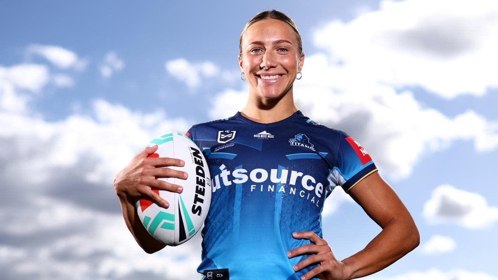
Australian Min Woo Lee was hanging tough as Americans Alex Smalley and Maverick McNealy grabbed the second-round lead at the PGA Championship in Philadelphia. ... Selwyn Cobbo…
3 sources covering this story
aapnews.aap.com.au · www.globaltimes.cn · www.uksport.gov.uk
Explore Formula 1 News Calendar Driver Standings Constructor Standings Qatar result Abu Dhabi resultMotorsport · Explore More Sports American…
2 sources covering this story
www.sportsmole.co.uk · www.theguardian.com
<strong>Dobson sustained the injury Saturday against the Blue Jackets after blocking a shot that hit his thumb</strong>. The two-week reevaluation period means he'll also…
2 sources covering this story
www.cbssports.com · www.nytimes.com
News · Sport · Football · Football · Football · Football · Football · Football · Football · Football · Football · Football · Football · Football · Football · Football · Football…
READ MORE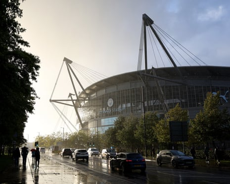
The head coach said before England host Spain in the Nations League that Cole Palmer’s latest withdrawal was a ‘missed opportunity’
READ MORE
European scores, results and fixtures on BBC Sport, including live football scores
READ MORE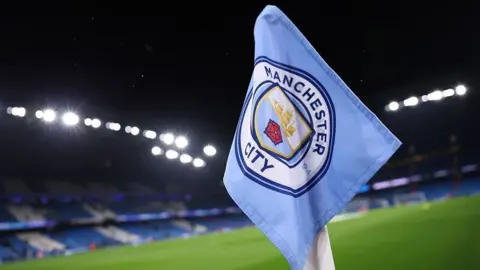
Football finance expert Kieran Maguire says the potential sanctions for <strong>Manchester City</strong> will be 'significant' after the sources told BBC Sport that the…
READ MOREStay updated with the latest Canada news and analysis. Including match previews, lineups & player ratings.
READ MOREFan easier, fan faster and fan better with Bleacher Report. Keep up with the latest storylines, expert analysis, highlights and scores for all your favorite sports.
READ MORE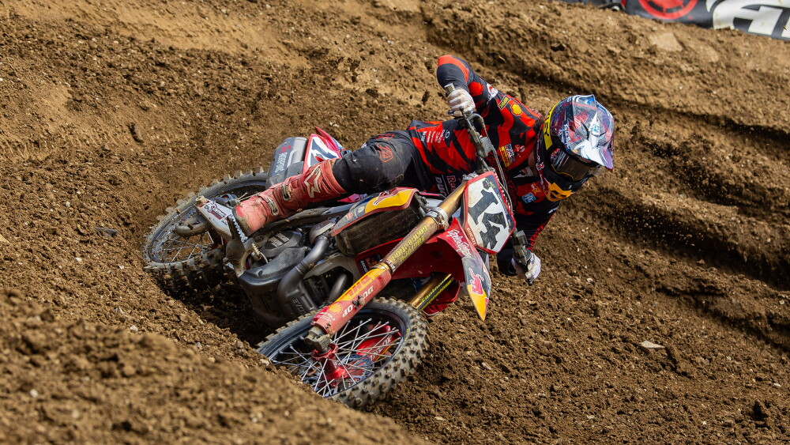
For a sport with a reputation of moving slowly, Jackson Koivun’s career has been at warp speed. ... Terry Gannon, Smylie Kaufman and Notah Begay III break down the United States’…
READ MOREThe official National Hockey League website including news, rosters, stats, schedules, teams, and video.
READ MOREAssistant hitting coach Hunter Mense is leaving the team to take a job with the San Francisco Giants, Sportsnet confirmed on... ... The Montreal Alouettes are heading back to the…
READ MORE
Montreal's financial window to make a big splash is wide open with the addition of two more affordable deals for useful players.
READ MORE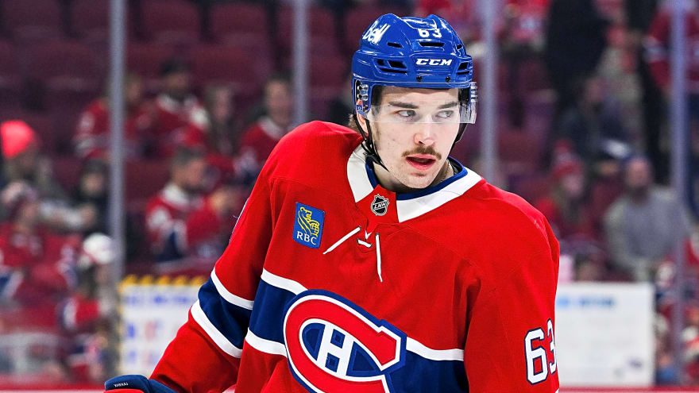
NEWSLETTERS Emailed Daily. Always Free! ... One of the first big decisions the Montreal Canadiens made at training camp this year was to have Chris Kreider play on the top line…
READ MOREThe Hockey News - Montreal Canadiens · 2026-09-24T11:00:04Z · Sportsnaut · 2026-09-24T11:00:00Z · View all · The real season is fast approaching and decision time is coming for…
READ MORE
<strong>Roof of Rio's Olympic velodrome damaged in blaze</strong>. Video, 00:00:41<strong>Roof of Rio's Olympic velodrome damaged in blaze</strong> ... Giant robot…
3 sources covering this story
www.bbc.co.uk · www.theguardian.com · apnews.com

Get the Vancouver sports stories that matter. From breaking news to in-depth analysis, get expert coverage from the best newsroom in sports. Join now and save on all access.
2 sources covering this story
www.nytimes.com · www.ctvnews.ca

Breaking News: B.C. declares state ... season, a year after being a World Series finalist. ... <strong>The Toronto Blue Jays have traded Kevin Gausman to the Chicago…
2 sources covering this story
vancouver.citynews.ca · toronto.citynews.ca

Get the latest sports scores and news from CP24, including coverage of the Toronto Maple Leafs, Raptors, Blue Jays and more.
2 sources covering this story
www.cp24.com · www.ctvnews.ca
Sao Paulo Futebol Clube page on Flashscore offers livescore, results, standings and match details (goal scorers, red cards, …).
2 sources covering this story
www.flashscoreusa.com · www.livescore.com
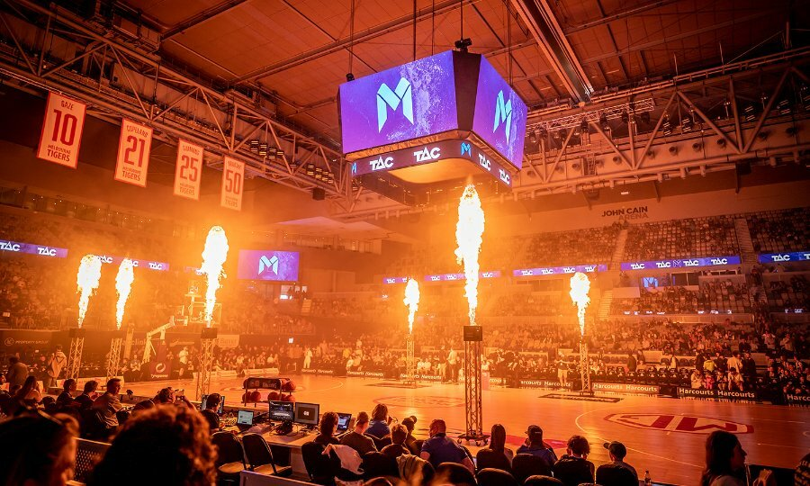
Lace up your sneakers and practise your cheer, because Melbourne's sporting calendar is packed with events, including the AFL Grand Final and Twenty20 cricket.
2 sources covering this story
whatson.melbourne.vic.gov.au · www.facebook.com
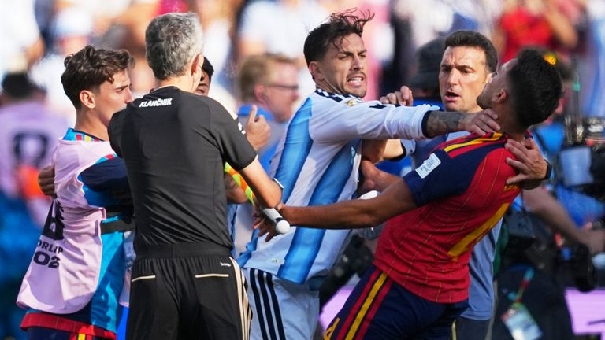
Argentina football team news with Sky Sports
2 sources covering this story
www.skysports.com · www.tntsports.co.uk
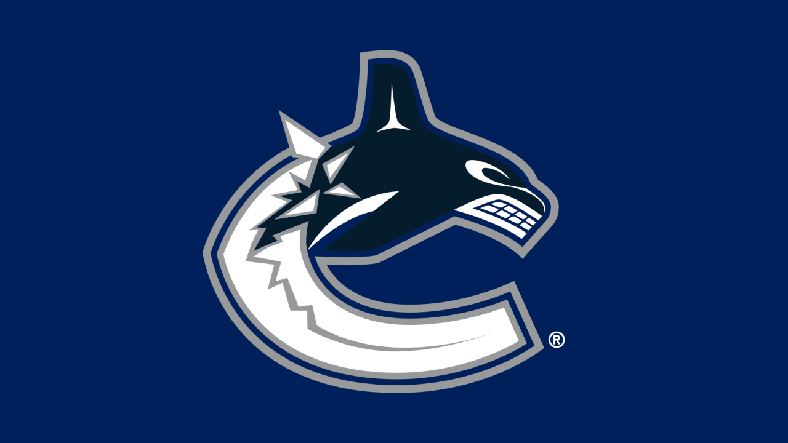
The official National Hockey League website including news, rosters, stats, schedules, teams, and video.
READ MORE
Unlock full digital access to the Vancouver Sun SUBSCRIBE NOW Unlock full digital access to the Vancouver Sun SUBSCRIBE NOW ... This advertisement has not loaded yet, but your…
READ MOREHenrik Sedin’s son scores his first international goal for Canada · It runs in the family 👀⚽️🇨🇦 · Preston Hodgkinson · Aug 2, 2026 · Events ·…
READ MORE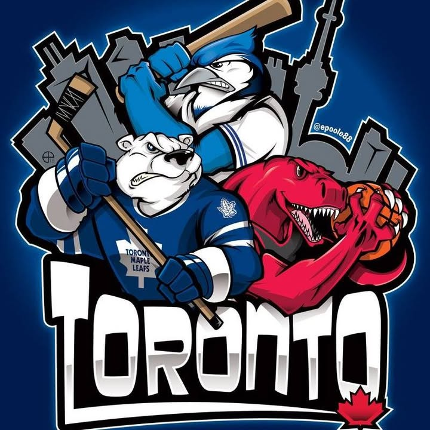
Toronto Sports News. 1,283 likes · 1 talking about this. This is a page for all Leafs, Jays, Raptors and TFC fans! By providing news and rumours, Toronto Sports News is your one…
READ MORE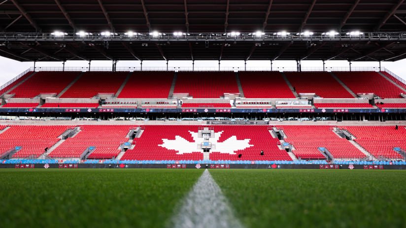
<strong>Toronto FC (6W-7L-11T, 29 points) extended their unbeaten run to seven matches</strong> with a dramatic come-from-behind 2-1 victory against Supporters’ Shield-leading…
READ MORE<strong>Toronto came away with just its second series victory in Tampa Bay in its last 13 attempts</strong>.
READ MORERio de Janeiro, Brazil's most popular city, has hosted World Cups and the Olympics, and <strong>next year the NFL will finally make its way there</strong>. Maracanã Stadium…
READ MORE
Get top and latest Rio De Janeiro News - Read Breaking Rio De Janeiro News and Rio De Janeiro News Headlines. WION is leading news channel worldwide get all latest breaking world…
READ MORE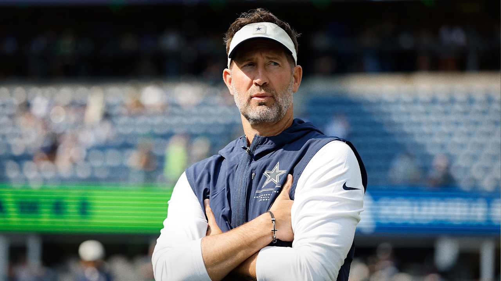
As the Cowboys prepare to meet the Ravens in Brazil, the playing surface in Rio is making headlines, and Dallas is addressing them after their win over the Commanders.
READ MOREThe NFL will play its first regular-season game in Rio de Janeiro as the Baltimore Ravens face the Dallas Cowboys at the Maracana Stadium, live on Sky Sports from 9.25pm Sunday;…
READ MOREThe Chiefs' season began against the Los Angeles Chargers in Brazil. Back in Kansas City, the Mill Creek Park fountain was dyed red. Fans gathered with cheerleaders and the…
READ MOREThis page lists major Brazilian newspapers, business finance outlets, sports news portals, and official news agencies with reliable coverage of politics, economy, society,…
READ MORE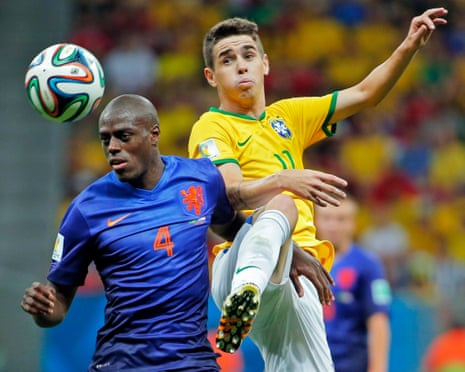
Brazilian forward is another rare and frazzled talent who has become a footballing toxic financial product, too costly to keep, too costly to sell · Thousands of São Paulo FC…
READ MORE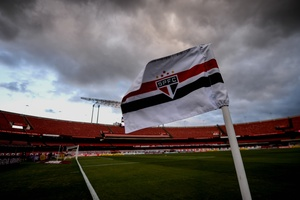
<strong>São Paulo</strong> · Vitória · Brasileirão · Mais jogos · Gabriel Sá defende saída de Arboleda do <strong>São Paulo</strong>: 'Encerrar ciclos' 24/09/2026 19h29…
READ MORE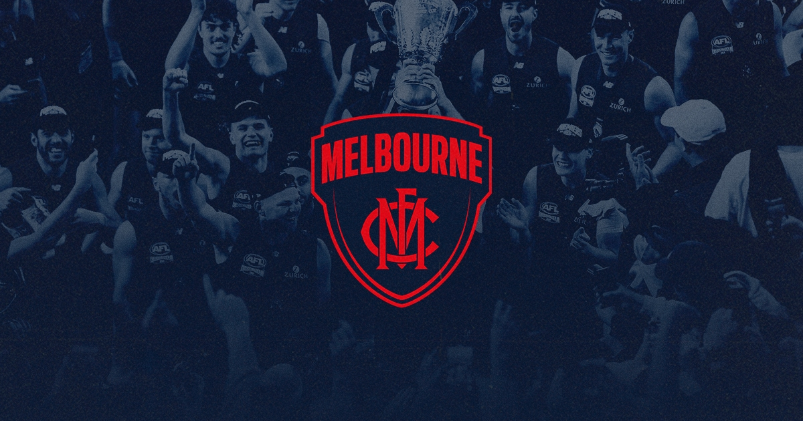
Melbourne's undefeated start to the season has continued against Carlton, lifting the Demons above North Melbourne on the ladder
READ MORE🔔+34Any country. Any topic. Pick countries on the world map and get breaking news alerts in your browser — free, no app.Turn on alerts →× ... The threat of rain did little to…
READ MORE
7NEWS brings you the latest Melbourne Victory news from Australia and around the world. Stay up to date with all of the breaking Melbourne Victory headlines & results.…
READ MOREPublished: Wed 23 Sep 2026 at 1:09pmWed 23 Sep 2026 at 1:09pm/Source: ABC News/Topic: Terrorism · As Melbourne prepares to host two non-Victorian teams in this weekend's AFL…
READ MOREView a list of upcoming sports events, concerts and recent results in Melbourne.
READ MORE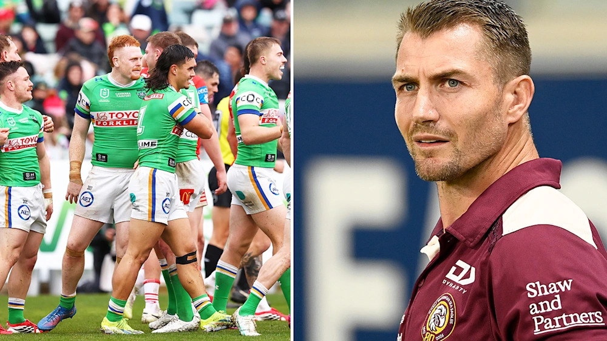
<strong>The triple All-Australian is set to depart after 15 seasons at the Giants</strong>.
READ MORE<strong>Australian striker Mo Toure sends home another goal for Norwich</strong>.
READ MOREThe eighth edition of the Golazo 50 is here! Julián Álvarez claimed back to back top spots but with the Atlético Madrid forward no longer eligible, who will be crowned […] · The…
READ MORE
<strong>The Argentina midfielder has finally joined Manchester City from Chelsea</strong>.
READ MORE
Australia’s indifferent results on the global, and particularly grand slam, stage are again in the spotlight after Lleyton Hewitt’s frank comments on Friday ahead of a rare Davis…
3 sources covering this story
www.theage.com.au · www.brisbanetimes.com.au · www.smh.com.au
Follow any political information, cultural, sporting and live streaming on RFI. The latest information, news and events in France, Europe and around the world.
2 sources covering this story
www.rfi.fr · www.france24.com
European football's governing bodyUEFAsaid Thursday it would boycott theWorld CupshouldFIFApress ahead with its private investor plan....
2 sources covering this story
www.bignewsnetwork.com · apnews.com
As Washington pushes other countries to impose travel restrictions on visitors from affected areas, WHO's European chief says the risk of Ebola spreading at the tournament…
2 sources covering this story
www.euronews.com · www.skysports.com
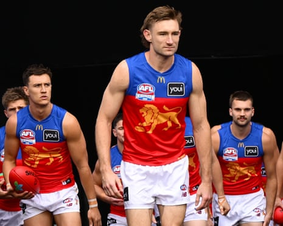
Latest Australia sport news, comment and analysis from the Guardian, the world's leading liberal voice
2 sources covering this story
www.theguardian.com · 7news.com.au
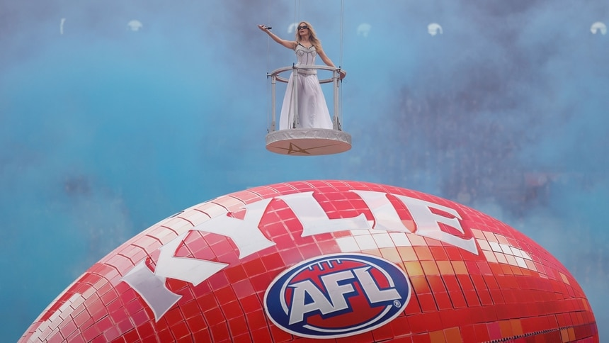
Hawthorn’s Nick Watson has claimed the 2026 Virgin Australia AFL Mark of the Year with his incredible ‘horizontal’ grab in Round 24 · AFL HQ · AFL Statement · AFL Statement · The…
2 sources covering this story
www.afl.com.au · www.nine.com.au
Australian gymnasts and their families are demanding accountability for what they claim to be decades of institutionalised failures within the sport.
2 sources covering this story
www.codesports.com.au · www.nytimes.com
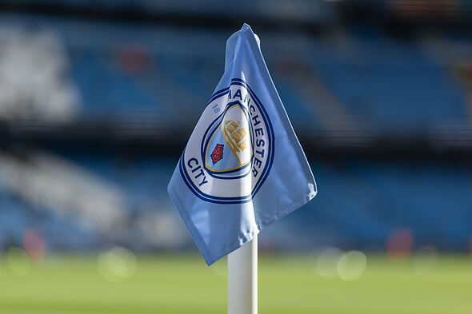
F1 news: Azerbaijan race day moved as Lewis Hamilton makes 'not natural' claim · Micah Richards pays tribute to BBC co-star after heartbreak of dad's death at…
2 sources covering this story
www.express.co.uk · metro.co.uk
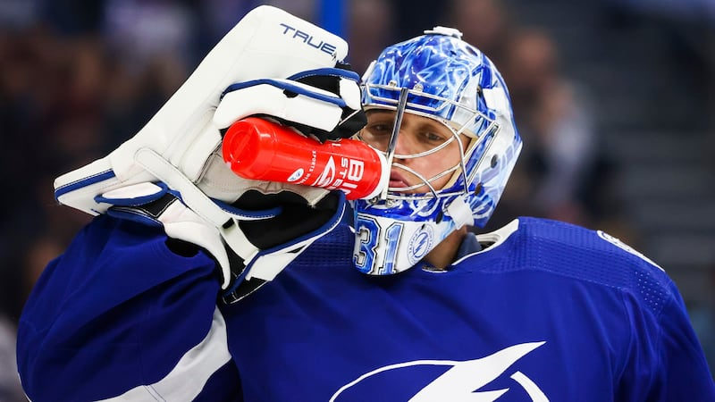
The TSN Hockey Insiders have the latest on NHL expansion talks, commissioner Gary Bettman’s succession plan, Senators owner Michael Andlauer's comments about the role Brady…
2 sources covering this story
www.tsn.ca · www.sportsnet.ca
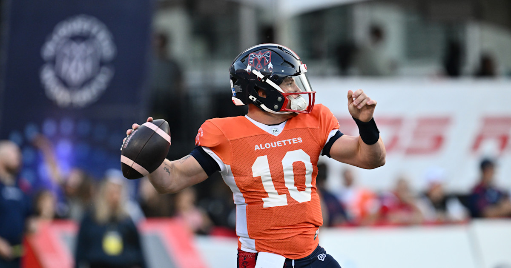
LatestMy News · Game Day · <strong>3 keys to victory for Ottawa, Calgary in Week 17</strong> · Game Day · 3 keys to victory for Edmonton, Hamilton in Week 17 · Injury Reports ·…
2 sources covering this story
cfl.ca · www.nfl.com
How do fantasy managers prepare if Puka Nacua doesn't play on Monday · OTTAWA — Maybe this is finally the week. It’s a common refrain for the Ottawa Redblacks, but remaining…
2 sources covering this story
ca.sports.yahoo.com · www.cbssports.com
We ate it in the morning and at night," says the Italian who coaches the Brazilian national team Nov.18.2025 1:14PM · Compartilhar nas redes sociais "Sports:…
READ MORE
<strong>A new-look Germany gave Jürgen Klopp and Germany fans reasons to be optimistic about the future as they draw in Amsterdam in the 2026/27 UEFA Nations League</strong>.
READ MORE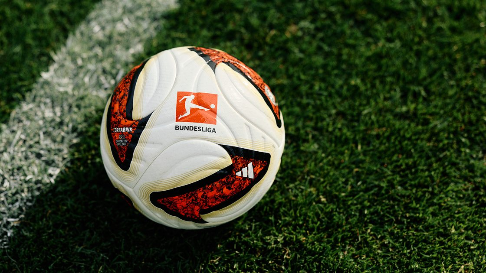
Choose who you would like to see Jürgen Klopp start in his second game as Germany coach against Greece.25.09.2026
READ MOREGerman national teamWirtz joins Burkardt in linking up with Germany squad early after Havertz and Musiala injury blows
READ MOREFrance’s women’s rugby team suffered a significant defeat to England at the 2026 Six Nations finale but celebrated a record-breaking crowd of over 35,000, highlighting growing…
READ MOREFind all the latest articles and watch TV shows, reports and podcasts related to Football on <strong>France 24</strong>
READ MOREPublished on September 17, 2026, at 7:55 pm (Paris) Le Monde with AFP ... The French Table Tennis Federation announced on Thursday that <strong>France will host the 2027 and 2028…
READ MORE<strong>All the latest from the 2026/27 league phase</strong>. ... We shine European football's floodlights onto the foundation of the game, celebrating the joy of…
READ MORE
Germany men’s head coach Julian Nagelsmann has extended his contract through to the 2028 European Championship. Nagelsmann last extended his contract with the DFB (German FA) in…
READ MORECan the potential of a golden generation of Israel's footballers, in sport and society, be realised? ... The country that doesn't play football... yet ... Captain Andy…
READ MORE... From rising stars to commercial ambitions, GOAL tackles six big questions nine months before Brazil 2027. ... <strong>Barcelona Femení have reached a historic milestone of…
READ MORE
Latest news and headlines from Australia and the world
READ MORE
<strong>Australia added six gold medals to their tally in Glasgow</strong> after the pool prowess continued, with a mammoth comeback to competition for Sam Williamson.
READ MORE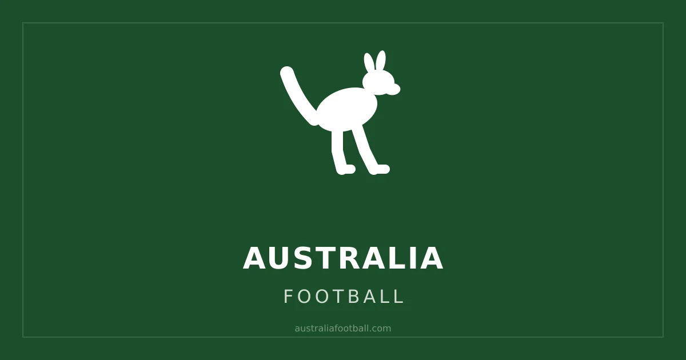
1 week ago - The unexpected day jobs of Australia's female footballers - ABC.NET.AU · 1 week ago - Spanish shot-stopper puts pen-to-paper on new Melbourne City deal -…
READ MORE<strong>Australian football is back on SBS</strong>, with the second season of the Australian Championship set to kick off in October.
READ MORE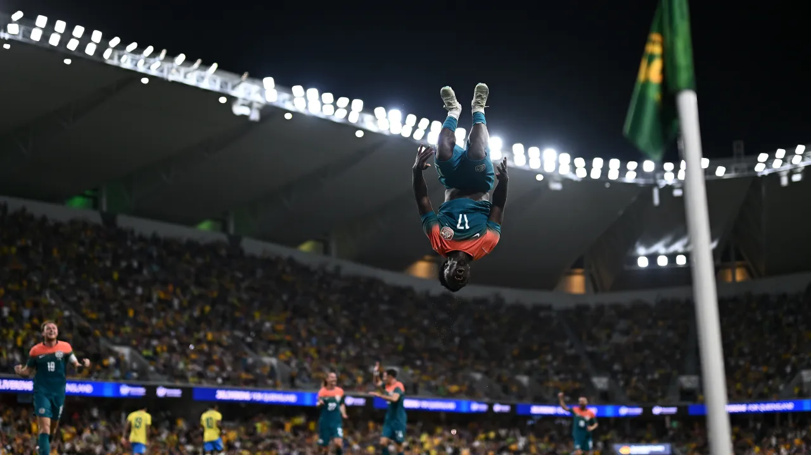
The latest news, videos, scores and more on the biggest sports, including NRL, AFL, Cricket, NBA and more with Sporting News Australia
READ MORESport news, live scores, features, analysis and photos from the world of sport. Comprehensive coverage of AFL, cricket, football, rugby league and rugby union. Audio interviews.…
READ MORE<strong>Canada scored four PP goals to down the U.S.</strong>
READ MORE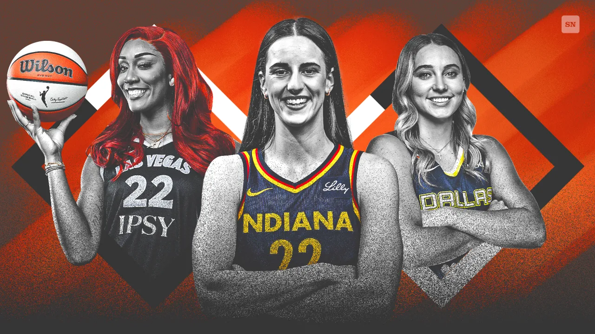
Allisha Gray sends Dream into playoffs with something better than a statement win
READ MORE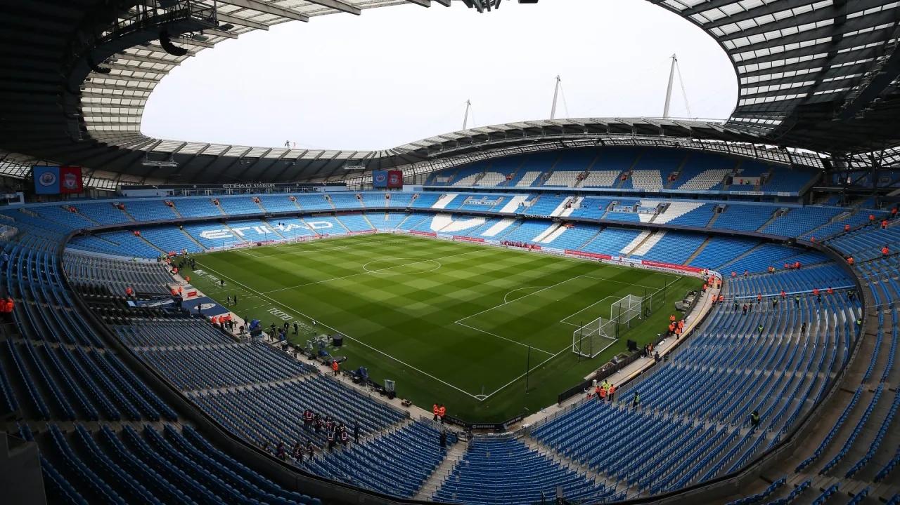
How do all 32 teams in the NFL stack up after Week 2? Here are The Sporting News' updated NFL power rankings. ... How Jaxson Dart's MCL injury compares to Jordan Love,…
READ MOREGet all of the latest UK Sports news from Express and Star. Providing a fresh perspective for online news.
READ MOREWith <strong>Man City expected to be found guilty of most of the 115 charges</strong>, the Premier League has a highly significant first victory in one of the most important…
READ MORE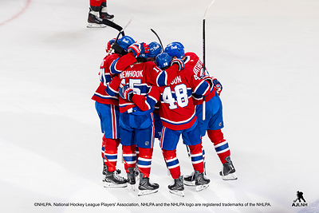
One-of-a-kind soccer destination combines play, culture and community as Canada prepares for a landmark summer in the sport CALGARY, AB, June 11, 2026 /CNW/ - SportChek today…
READ MOREInterested in more newsletters? Browse here. ... This advertisement has not loaded yet, but your article continues below. ... WATCH BELOW: On the latest episode of Long Ball,…
READ MOREThe Globe and Mail Sports section provides sports news, post-game analysis, in-depth features and video on Canada's teams. Find breaking sports news on baseball, football,…
READ MORE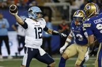
Many of the kids in his African Youth Sports Academy come from low… ... CALEDON - Ben James certainly knows how to make a splash. ... REGINA - The B.C. Lions are going from a bye…
READ MOREWhich wild cards could win it all? Are the Yankees cooked without Judge? Here's what those in the sport think could decide October. Canada’s men’s soccer team will play…
READ MORE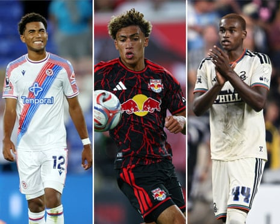
NC State had the ball, the lead and only six seconds to kill.
READ MORE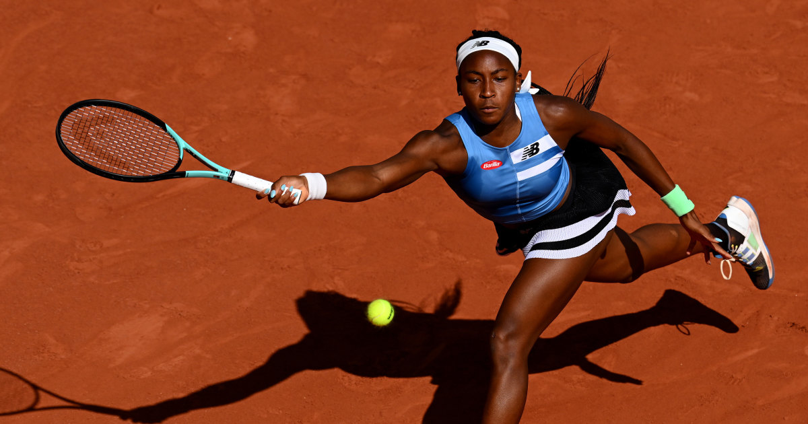
Get the latest sports news and videos on major leagues, college sports, Olympics, golf, plus expert analysis from NBC News and NBC Sports.
READ MORENFL.com keeps you up to date with all of the latest league news from around the NFL. Visit NFL.com's transaction hub for a daily breakdown.Sep 23, 2026 ... The NFL announced…
READ MOREWhat Does It Take To Retain A Superstar QB? Mississippi State Is About To Find Out
READ MORE
Germany confirmed lineups: Xavi, Jurgen Klopp make bold decisions for Nations League showdown Sports Mole 19:07 · Baur Missing From Germany Squad as Klopp Decision Explained…
4 sources covering this story
www.newsnow.co.uk · www.newsnow.com · dailysports.net · sports.ndtv.com
A compilation of the latest sports news from ESPN. ... ESPN.com: Help | Press | Advertise on ESPN.com | Sales Media Kit | Interest-Based Ads | Do Not Sell or Share My Personal…
2 sources covering this story
www.espn.com · www.thejakartapost.com
The championships kick off this Saturday at Claude Robillard Sports Complex and the finals take place on July 15th. ... Despite a slow start to the game, Montreal controlled the…
2 sources covering this story
globalnews.ca · apnews.com
Tap to see sports' GOAT squads 📲 ... In today’s links, why the lack of a major move shouldn’t dampen hopes, Lane Hutson’s defence is underrated, and the Bruins sign Fraser…
2 sources covering this story
bleacherreport.com · www.espn.com
With Dylan Larkin off the table for Montreal, GM Kent Hughes is setting his sights on a new star center. Here is the latest on the Canadiens trade search.
2 sources covering this story
awinninghabit.com · thehockeynews.com
<strong>The Montreal Canadiens have locked in Alex Newhook with a 4-year, $22.2M extension ($5.55M AAV)</strong> as he enters the final year of his contract.
2 sources covering this story
sportspyder.com · montrealgazette.com
Jakub Dobes plays tennis with Casper Ruud | Montréal Canadiens The official National Hockey League website including news, rosters, stats, schedules, teams, and video. ... NHL…
2 sources covering this story
www.foxsports.com · www.ctvnews.ca
Montreal Sport News · November 26, 2025 Montreal Daily · Exploring the likelihood of Jacob Fowler’s call-up to the Habs as Montreal Canadiens fans eagerly await goalie news. […]…
READ MOREMontreal News · The cycling races began Sunday with the women’s and men’s elite individual time trials. Montreal Canadiens · Juraj Slafkovsky and Ivan Demidov both have high…
READ MORECarlos Alberto Solari, the Argentine singer-songwriter known as “the Indio” who led Patricio Rey y sus Redonditos de Ricota, one of the most popular and influential Argentine…
3 sources covering this story
apnews.com · www.newsnow.com · www.batimes.com.ar
Sport · Breaking News · <strong>Over 300 detained, 19 hospitalized after violent football clashes in Buenos Aires</strong> · By Mark Krukov - August 26, 2025 · Argentina’s San…
3 sources covering this story
www.argentinareports.com · www.newsnow.com · www.bbc.com
After an opening week of surprise wins and losses, several teams look to hit their stride by getting in the win column.
9 sources covering this story
www.foxla.com · abc7.com · nationaltoday.com · patch.com
Visit ESPN for Vancouver Canucks live scores, video highlights, and latest news. Find standings and the full 2026-27 season schedule.
2 sources covering this story
www.espn.com · ESPN
Current updates on the latest hockey news Around the league with scores , standings, and schedules. Also with exclusive insight on the Vancouver Canucks.
2 sources covering this story
theprovince.com · vancouversun.com
Stay up to date on the latest Sao Paulo news coverage from AP News.
2 sources covering this story
apnews.com · www.flashscore.com
Here are all the updates from Indian sports on April 21, 2026.
4 sources covering this story
www.espn.in · www.espn.com.au · www.espn.co.uk · ESPN
The North Korean delegation is ... is larger than the ... <strong>South Korea cruised to an 82-66 win over Saudi Arabia to open the men's basketball competition of the 20th…
4 sources covering this story
www.koreatimes.co.kr · www.koreaherald.com · www.japantimes.co.jp · www.nytimes.com
Home Society Business Politics Education Sci-Tech Crypto / AI Entertainment Sport Food Travel Bilingual Chinese Indonesian Arabic Contact Us ... <strong>Shohei Ohtani announced…
4 sources covering this story
www.newsonjapan.com · japannews.yomiuri.co.jp · japantoday.com · www.newsnow.com
Impact Poku arrived in Vancouver during the latest transfer window with the aim of reinforcing the Whitecaps' attack, though he's yet to play for the club as he…
READ MOREVancouver Sports - Scores, News and more, all on VancouverIsAwesome.com
READ MOREVancouver Canucks news, rumors, and information.
READ MOREOn Thursday morning, BC NDP Leader David Eby said they will bring in new 'Built in B.C. and Canada' procurement rules for public infrastructure projects.
READ MOREExplore the latest sports events and competitions in Toronto, Canada, including schedules, news, tickets, highlights, and more with Fixture Calendar.
READ MOREMade in Canada · Gaza Conflict · Advertisement · Advertisement · Advertisement · Explore news, guides and updates about Toronto · Sports · The Hockey News - Toronto Maple Leafs ·…
READ MOREStay up to date on the latest scores, stats, and analysis for all your favorite local Toronto sports teams and players.
READ MORETORONTO - <strong>Maksymilian Szuber scored the winner in the third period as the undermanned Montreal Canadiens topped the Toronto Maple Leafs 4-1</strong> in…
READ MORENewsletter · Sign in or register · Home · Local · Sports · By: Canadian Press Jul 4, 2026 8:00 PM · By: Tara Deschamps, The Canadian Press Jul 4, 2026 7:00 AM · By: TorontoToday…
READ MOREMARICA, Brazil, May 6 (Reuters) - From a village on the coast of Rio de Janeiro state, <strong>Indigenous people have founded a professional soccer team made up solely of players…
READ MORERio de Janeiro: Rain tonight in Rio: free MIMO night with Emicida and Tinariwen at Circo Voador, ArtRio's last day,... September 20, 2026
READ MORESports · Markets · Crypto · Market Reports · World · Africa · Asia · Defense Updates · Europe and Russia · Lusophone World · Middle East · North America · World-News · Analysis ·…
READ MOREKenny Clark is headed back to Brazil, where his Dallas Cowboys face Baltimore two years after the defensive tackle played for the Green Bay Packers on a “mushy” field. This year,…
READ MOREVeteran defender Dani Alves to sit out rest of Brazilian domestic season, not retiring from football • . After the 38-year-old right-back terminated his contract with Sao Paulo…
READ MORE<strong>São Paulo will play the next match against Palmeiras on Sep 12, 2026, 9:30:00 PM UTC</strong> in Brasileirão Betano.
READ MORELatest news and comment on Melbourne · Shadi Khan Saif · About 6,017 results for Melbourne · 1234... Explore more on these topics · Victoria · Sydney · New South Wales ·…
READ MORENFL superstar Matthew Stafford's whirlwind trip to Melbourne has sparked speculation he could lose more than half his match pay to tax, prompting a response from the…
READ MORE<strong>Devastating blow for Sydney Swans captain Callum Mills after agonising knee injury during surprise victory</strong> · Crushing blow for San Francisco 49ers player Brayden…
READ MOREThe Sydney Sixers will host a prime-time double header under lights to finish off the home season of the WBBL.
READ MOREMundo Albiceleste is your home for all the latest news about the Argentina National Football team in English!
READ MOREWith Argentina’s icon at the peak of his powers for Inter Miami, his absence will result in a one-match ban
READ MOREHomepage for the Buenos Aires Times, Argentina's only English-language newspaper. News from Argentina and beyond – in English. News, analysis, politics, finance, economy,…
READ MORESports China. 5,071,209 likes · 14,590 talking about this. Timely updates sports news across China. Run by @PDChina, the largest newspaper group in China
3 sources covering this story
www.facebook.com · x.com · www.chinadailyhk.com
<strong>Serie A side Bologna have become the second team in the Italian top-flight to sack their manager</strong>, with Domenico Tedesco set to part …
3 sources covering this story
www.getfootballnewsitaly.com · www.getfootballnewsgermany.com · www.getfootballnewsfrance.com
From the NFL to NBA, from the MLB to the NHL, we have your covered on New York sports.
3 sources covering this story
www.fox5ny.com · www.nbcnewyork.com · www.amny.com
The New Mexico United can't bring all their fans on the road, but they know they're there in spirit. ... The Demons have been relegated to Class 5A this season, opening…
2 sources covering this story
www.santafenewmexican.com · www.chinadaily.com.cn
Where to watch Inter Miami vs. Cruz Azul live stream, TV channel, start time for Campeones Cup 2026 | Sporting News Lionel Messi guns for another trophy with Inter Miami as the…
2 sources covering this story
www.foxsports.com · www.thestar.com
<strong>Mexico 2-3 England</strong> - highlights.
2 sources covering this story
www.bbc.com · www.bbc.co.uk
Get the latest news and photos on China sports, sport games, sport markets, sport stars, including Yao Ming, Liu Xiang, and Li Na from Chinadaily.com.cn
2 sources covering this story
www.chinadaily.com.cn · www.chinasportsbeat.com
India will play Japan in a one-off T20I on September 22 at the Sano International Cricket Ground in Sano, Tochigi Prefecture, marking 75 years of diplomatic ties and India’s…
2 sources covering this story
www.outlookindia.com · indianexpress.com
Stay Up To Date With The Latest Sports News & Updates From The World Of Cricket, Football, Tennis, Badminton & Much More At The Hindu
2 sources covering this story
www.thehindu.com · www.indiatvnews.com
Victory would also give India its first gold medal of the Aichi-Nagoya Games.Shooting offers another medal opportunity for India, with Elavenil Valarivan and Parth Rakesh Mane…
2 sources covering this story
timesofindia.indiatimes.com · www.ctvnews.ca
<strong>Unbeaten Italy advanced to the World Baseball Classic quarter-finals by routing Mexico 9-1</strong> on Wednesday, allowing the fancied collection of United States stars…
2 sources covering this story
www.thelocal.it · www.thelocal.fr
2026 MLB lockout looms, how is John Mozeliak altering player plans? Dive into how the impending labor war is already shaping the LA Angels roster. Taking a look at some of the…
2 sources covering this story
www.si.com · www.foxsports.com
NEW YORK -- Aaron Judge has a “moderate grade” right calf strain and is likely to miss at least the beginning of the Yankees’ postseason, according to manager Aaron Boone, who…
2 sources covering this story
www.mlb.com · www.nydailynews.com
The New York Daily News is the local news source for New York City and more, providing breaking news, sports, business, entertainment, things to do, opinion, photos, videos and…
2 sources covering this story
www.nydailynews.com · www.facebook.com
Explore top New York news and sports with amNewYork. Get the latest city insights and headlines. Your premier NYC news source!
2 sources covering this story
www.amny.com · pix11.com
Stay updated with the latest Liga MX news and transfer rumors. Including match previews, lineups & player ratings.
READ MORE<strong>Mexico U20 takes on Antigua and Barbuda U20 at the Estadio Cuauhtemoc in the Matchday 1 of the 2026 CONCACAF U-20 Championship group stage</strong>. El Tri seeks to win…
READ MORE<strong>Five clubs from Mexico's second division have filed an appeal against the Mexican Football Federation (FMF) and top-flight Liga MX regarding promotion and…
READ MOREJarell Quansah saw red and Harry Kane scored and conceded penalties after Jude Bellingham’s double as <strong>England beat Mexico 3-2</strong> in an extraordinary game
READ MOREComprehensive match preview of Mexico vs England at World Cup 2026. We talk tactics, team news and more ahead of this Round of 16 clash in Mexico City.
READ MOREMexico · Marcos OlveraDavid Nelson12/05/2026 12:12 ·
READ MORE... Redacción Deportes, 11 jun (EFE).- <strong>La selección mexicana venció este jueves en el estadio Azteca el miedo a no ganar el partido inaugural en un Mundial al imponerse a…
READ MORE<strong>Beyond football, Brazil has emerged as a powerhouse in various sports</strong>. The country's volleyball teams consistently rank among the world's best, with…
READ MORE🚨ESTADÃO: <strong>Carlo Ancelotti approved CBF's plan to reduce the limit on foreigners in the Brasileirão</strong>. The measure aims to increase opportunities for young…
READ MOREBrazilian basketball legend Oscar Schmidt passed away last week, aged 68. His legacy in the sport goes beyond being “the best never to play in the NBA”
READ MORE<strong>Brazil's sports court suspended Víctor Gabriel until Cruzeiro forward Gabriel Pec returns to training after sustaining a broken leg from the Inter defender's…
READ MORENeymar played his final international match as <strong>Brazil lost to Norway in the round of 16.</strong>
READ MORE<strong>Carlo Ancelotti, for better or worse, remains in charge of the Seleção</strong> and this time will have a full four years to explore the talent pool and build a new team…
READ MOREJapan took the lead in the first half but Casemiro equalised with a header and Gabriel Martinelli scored in stoppage time as Brazil won 2-1
READ MOREWhile <strong>Brazil's devastating exit from the 2026 World Cup</strong> has left a fanbase in mourning, midfielder Bruno Guimaraes opened up about the immense emotional…
READ MORESport · Brasil News · <strong>Brazilian star Bruno Henrique accused of match-fixing for yellow card bet</strong> · By Thiago Alves - April 17, 2025 · Brazilian soccer star Lucas…
READ MORESports celebrity <strong>Zhang Jike has been dumped by brands over accusations of sharing intimate videos featuring his ex-girlfriend without permission</strong>. ... The Flying…
READ MORESun Yingsha, Matsushima crowned singles champions at WTT U.S. Smash 2026-07-06 15:21 · Highlights of women's single final at WTT United States Smash 2026 2026-07-06 15:06 ·…
READ MOREXinhua, english.news.cn, brings you sports headlines, video, photos and news stories
READ MOREPickleball and other emerging sports are rapidly moving from niche pastimes to mainstream leisure across China, driven by affordability, social appeal, and their growin…
READ MOREChina Daily: China's sports industry sets five-year target The General Administration of Sport of China recently released the 12th Five-Year Plan (2011- 2015) for the sports…
READ MOREDiscover the latest sports news from China and around the world.
READ MORE<strong>Tech powers China's sports upgrade in new five-year plan</strong> CGTN 08:41
READ MOREGet stories and pictures of soccer, basketball, tennis, motor racing, sports stars and the Olympic Games from the China Daily and chinadaily.com.cn.
READ MOREChina’s Zou Jingyuan was attacked online by disgruntled fan groups after the Gymnastics Administrative Centre announced the team for next month’s Asian Games.
READ MOREWelcome back to Instagram. Sign in to see what your friends, family and interests have been capturing and sharing around the world.
READ MOREIn the team event, India are placed third as it stands, behind Indonesia and China, keeping the team medal hopes alive.
READ MORESport News - Get latest sport news & top sports stories today includes football, tennis, formula 1, basketball, golf, school sports and more sports news at straitstimes.com
READ MOREGet live top and breaking sports headlines from Indonesia in JSON format.
READ MORESportainment · TAG · #Bursa Transfer · #Liga Champions · #Liga Inggris · #Piala Dunia 2026 · #Bulutangkis · #Live Streaming · Jadwal Piala AFF 2026: Timnas Indonesia Main di…
READ MORE<strong>Bintang Akbar/Sofyan Rachman's progress at the 2026 AVC Beach Continental is unstoppable</strong>. The Indonesian beach volleyball pair secured their place in the…
READ MORESports minister and business magnate Erick Thohir recently increased his controlling interest in Oxford United. News Nov 20, 2025 | 4:46 pm · Janice Tjen’s historic 2025 season,…
READ MORE<strong>The World No.2 beat Belaetrix Manuputi of Indonesia 21-12, 21-15 in 33 minutes at the Siri Fort Sports Complex to improve her career head-to-head to 2-0</strong>.
READ MORE<strong>Singapore are through to the ASEAN Championship semis after getting the point they needed in a 1-1 draw with Indonesia on Friday</strong>.
READ MOREIndonesia’s triumph as overall champions at the 2026 World Para Athletics Grand Prix in Tunisia once again showed ... ... The Ministry of Youth and Sports is targeting…
READ MOREJonatan Christie is the last Indonesian standing at the India Open 2026. He faces Loh Kean Yew in the semifinals after defeating Christo Popov. Index News · Popular in Sport ·…
READ MOREGrowing concern over climate pressure, escalating costs and the waste of Olympic infrastructure after the Games is strengthening support within international sport for a rotation…
READ MOREGet Latest Sports News And Updaetd National & International Sports News. Games And Sports All At One Desk At - The Hans India.
READ MORE<strong>Key wins from Praggnanandhaa and Gukesh powered India past England in Round 7,</strong> while an unbeaten 6.0/6 run from Savitha Shri kept the women’s title defence alive.
READ MOREVideoRuns and records galore as England beat India to seal ODI series win
READ MOREICC rules explainedCricket brings 1st gold for India: Harmanpreet’s women defend Asian Games crownIndia hang on by a thread to survive Japan scare, but spin woes surface again‘We…
READ MOREIndian boxer Pooja Rani has worked on her coordination and gained a lot of lower body strength in the last two years. Here's how she's gearing up for the games · His…
READ MOREShooting LIVE updates from Asian Games 2026, September 23: Raiza finishes fourth in skeet final; India shotgun team wins two bronze medals
READ MORE<strong>Vidarbha fast bowler Yash Thakur has been named as a replacement for Harshit Rana in India's squads for the three-match T20I series against Afghanistan and the 2026…
READ MOREThe Union Minister, who arrived in Mizoram on a three-day visit visited the Sports A... ... In Men’s Cricket, India defeated Afghanistan by 7 wickets in the first T20…
READ MOREHow one India T20I could become Japanese cricket's defining moment · 'I’d love to be no. 1': Fleming lays out England’s Test ambitions ahead of South Africa Tour…
READ MORE<strong>Asian Games 2026</strong>: India's Asian Games Gold Rush Starts, Harmanpreet Kaur And Co.
READ MORERediff Sports - India's most popular Sports page covering latest news and stories about Cricket, Hockey, Football, Tennis, Chess, Formula 1, Motorsports with Live scorecard…
READ MORE<strong>Pranati Nayak qualified for the women's vault final at the 2026 Asian Games after finishing seventh in qualification with a score of 12.916.</strong> The Indian…
READ MOREAsian Games 2026: Indian table tennis teams knocked out after losses...
READ MOREJapanese media Tokyo Sports also reported on related remarks, stating, "Cooperation and consideration from the athletes are necessary for smooth shuttle bus…
READ MOREKorea's men's handball team says its speed and organization can overcome Middle Eastern rivals at the Aichi-Nagoya Asian Games. ... Shin Dong-guk stopped favored Park…
READ MOREOn the 23rd, at the women's team ... Japan, <strong>South Korea's national team, aiming for back-to-back titles, suffered a painful comeback loss to Japan with a match…
READ MORE<strong>Korea swept five modern pentathlon medals at the Aichi-Nagoya Asian Games</strong>, with Seong Seung-min taking the delegation's first gold.... Published 2026.09.20.…
READ MORENews Focus · Sports · Policies ... 3rd straight China Masters · Badminton supernova <strong>An Se Young has won her third straight women's singles title in the China…
READ MOREVideo, 00:00:59Oh Hyeon-Gyu scores winner for South Korea ... <strong>South Korea fight back to beat Czech Republic</strong>.
READ MOREProvides Sports news such as Golf, Baseball, Football, and General.
READ MORELatest News · Pause more · Close · Sports · #football Women's football coach eyes 1st Asian Games gold for S. Korea Shin Sang-woo, head coach of the South Korean…
READ MORE<strong>Japan drew 1-1 with Sweden</strong> on Thursday (Friday morning, Japan time), making sure of second place in Group F at the FIFA World Cup 2026 and setting up a…
READ MOREIn first U.N. speech, Takaichi calls for removal of Japan’s wartime ‘enemy state’ label ... Beijing has latched on to the clause in its row with Tokyo, insisting it remains…
READ MOREA dozen women in sports bras and tight shorts stood behind a U-shaped counter at an underground bar in a busy Tokyo neighbourhood, chiselled frames on full display as they…
READ MORESota Fujii (23) defended the Oi title for a sixth consecutive year after winning Game 6 of the best-of-seven match at the Shogi Kaikan in Tokyo, with Challenger Takuya Nagase…
READ MORESports · <strong>Japan chases its World Cup dream despite injury setbacks</strong> · June 22, 2026 · Japan para ice hockey ace prepares for sport's biggest stage · March 4,…
READ MORELatest Sports stories from Japan.Japan Wire by Kyodo News is an online publication delivering the latest news from Japan together with those stories from around the globe in…
READ MOREAfter World Cup ouster, Moriyasu says Japan on track to be No.
READ MOREGolf: <strong>Yamashita wins CPKC Women's Open, Yoshida 2nd in Japanese 1-2 finish</strong>
READ MOREItaliano English · La Gazzetta dello Sport. English edition. News · Serie A · Serie B · Fantasy Football · Coppa Italia · Women's Football · Other Leagues · Milan · L.…
READ MORECBS Sports has the latest Serie A news, live scores, player stats, standings, fantasy games and projections on the Italian Serie A.
READ MOREItalian football news, results, fixtures, blogs and podcasts, bringing you analysis from Serie A, Serie B, the Champions League and the Azzurri.
READ MOREGet the latest Italian football news from Serie A, Serie B, and the Azzurri. Read through analysis, news, fixtures, and betting tips today.
READ MOREBBC Sport · AC Milan v Lecce · Attribution · European Football · Posted · 2 days ago2d · Juventus v Atalanta · Attribution · Italian Serie A · Posted · 2 days ago2d · Martinez…
READ MORENewsletters · Sign in · The Inter and Italy defender Alessandro Bastoni is under investigation over alleged underage prostitution as part of an inquiry into an events company ·…
READ MORE<strong>Juventus goalkeeper Michele Di Gregorio is reportedly on the verge of joining Premier League side Bournemouth on loan with an option to buy</strong>. According to…
READ MOREFrontpage Home page top news Inter Latest News Newsnow ... Djed Spence hasn't yet played for Inter since his move from Tottenham, but according to Gazzetta, the Englishman…
READ MOREBelgium Alaba: Ex-Real Madrid defender reaches surprise agreement with Udinese Juventus near agreement with Neto as free agent, target Palmisani for 2027-28 Today’s Papers – Pio…
READ MOREIn a hard-fought match, <strong>FC Barcelona ruthlessly outplayed Bayern Munich</strong>. German coach Hansi Flick and his new team defeated his old club 4:1. Brazil’s…
READ MOREGermany injury, suspension list, predicted XIs | World Cup 2026 Sports Mole 21:02 Wed, 24 Jun ... Tuchel teases changes to England line-up for crucial Panama clash The…
READ MOREGermany's new head coach says he wants his team to reclaim pride in being German after recent political developments. ... Jürgen Klopp's huge squad includes a host of…
READ MOREFootball news Today, 06:50 Didn't convince the referee. Adeyemi shown yellow card for simulation in Germany vs France match
READ MOREThe home of German Bundesliga on BBC Sport online. Includes the latest news stories, results, fixtures, video and audio.
READ MOREEsteban Lepaul earns place in Zinédine Zidane’s provisional France squad Get French Football News 5d ... Paris FC star signing Pablo Pagis shortlisted in Zinédine Zidane’s…
READ MOREFind latest sports news from every corner of the globe at Reuters.com, your online source for breaking international news coverage.
READ MOREStay tuned for the stories, sports and athletes shaping the road to Istanbul 2027. ... Pol Moya has participated in two Olympic Games: Rio 2016 and Tokyo 2020, held in 2021. In…
READ MOREGet the latest football and soccer news, including Premier League, Champions League, La Liga, and Serie A. Breaking updates, match reports & transfers.
READ MORELatest information about events related to sport in the EU, EWoS, HL4A, the Sport Forum, Erasmus+ Sport information day, conferences, meetings and more.
READ MORE🕰️ LATE BID EXPECTED: NewsNow Essentials at just £1.99 a month! Another great transfer deal! Upgrade here · Fabrizio Romano reveals Endrick ‘decision’ on joining Arsenal from…
READ MORE... <strong>England lose their Euro 2025 opener 2-1 to France after a limp performance in Zurich</strong>. ... Vivianne Miedema has scored her 100th goal for the Netherlands…
READ MORESoccer news, results, fixtures, blogs, podcasts and comment on the Premier League and World football from the Guardian, the world's leading liberal voice
READ MORE7NEWS brings you the latest local news from Australia and around the world. Stay up to date with all of the breaking sport, politics, entertainment, finance, weather and business…
READ MOREUK Sport NewsThe horse racing icon has been taken to hospital following the frightening incident [National news] ... England Football TeamHarry Kane and his teammates just about…
READ MOREManchester United · Save · Coventry City 0 Brighton 5 · Save · Women's football · Save · Test cricket · Save · Sir Geoffrey Boycott · Comment · Save · Comment · Save ·…
READ MOREUnrivaled sports coverage across every team you care about and every league you follow. Get breaking news, powerful stories and smart analysis from the best writers in sports.
READ MOREExpress Sport rounds up the latest injury updates concerning Manchester United. JJ Gabriel has asked to leave Manchester United, with the 15-year-old wonderkid seeking...…
READ MORERead the latest Sport news, including Football, UFC, Boxing, Racing and more. Get the best match reports, insight and live covereage from the Mirror Sport team.
READ MOREConnecting Canadians from coast to coast to coast with the latest news on sport and physical activity, featuring key announcements, event updates, and more. Subscribe to Canadian…
READ MOREAudience Relations, CBC P.O. Box 500 Station A Toronto, ON Canada, M5W 1E6 · Toll-free (Canada only): 1-866-306-4636
READ MOREAre remaining star RFAs destined for mid-term contracts given recent NHL trends? The Hockey News 17h
READ MOREClick to see more latest Sports videos · View all · Advertisement · Canada · Toronto Blue Jays’ Guerrero Jr. defends $500M · Sports · Bills fans in Toronto praise Buffalo after…
READ MORESportsnet is Canada’s Leading Sports Network, featuring extensive coverage of the NHL, MLB, NBA, and all your favourite teams and leagues.
READ MORE<strong>CBC Sports' daily newsletter delivers a postmortem on the 2026 Toronto Blue Jays now that they're officially eliminated from playoff contention</strong>.
READ MORETexas rallied late to beat Ohio State, so why are people talking about an AI video and a Texas candidate instead? ... Lane Kiffin’s bitter divorce with Ole Miss reopened old…
READ MOREStacey Wescott/Chicago Tribune/Tribune News Service/Getty Images · 3 key NFL quarterbacks suffered injuries in a brutal Week 2. Here’s the latest on their status
READ MOREStay up to date with the latest sports news, covering the Premier League, MLS, the NFL, NBA, NHL, boxing tennis and more.
READ MOREWe answer lingering questions after his latest injury ... The main things to know from Sunday's Week 2 games: Mahomes' magic returns; injuries to Williams, Daniels ...…
READ MORE<strong>Giants QB Jaxson Dart is believed to have suffered a sprained MCL</strong> based on the initial exams, sources tell me and Mike Garafolo. X-Rays were negative and the MRI…
READ MORENew York Giants NewsSep 21 · Giants news: John Harbaugh’s impact, Jameis Winston, Joey Porter, more · By Ed Valentine · New York Giants NewsSep 20 · Former NY Giants GM Ernie…
READ MOREThe official website of the New York Yankees with the most up-to-date information on news, tickets, schedule, stadium, roster, rumors, scores, and stats.
READ MOREYour morning catch-up: Inside USC’s football program, a statewide emergency ahead of El Niño storms and more big stories
READ MORE<strong>ESPN+ broadcaster Graham Metzker picks the Los Angeles Rams to win it on their home turf at SoFi Stadium once again</strong>, citing the combination of Sean McVay and…
READ MORE"I feel like it’s my birthday,” Anaheim Mayor Ashleigh Aitken said of her reaction to the news of the Angels' sale to Stan Kroenke.
READ MOREAngels fans are excited for the new era taking shape in Anaheim. <strong>Rams owner Stan Kroenke has agreed to buy the Los Angeles Angels</strong>, adding Major League Baseball…
READ MORELAXSportsNation looks to provide the latest Los Angeles sports news and happenings across our network of social accounts and platforms
READ MORELos Angeles Dodgers closer <strong>Edwin Diaz has returned from a monthlong absence due to a neck injury</strong>, making him available for Friday's series opener against…
READ MORELA Daily News coverage of Los Angeles Rams. Follow LA Rams news about Aaron Donald, Cooper Kupp, Matthew Stafford and the rest of the Rams roster.
READ MOREIs it time to be concerned about Jayden Daniels? We answer lingering questions after his latest injury
READ MORE<strong>The Falcons placed star cornerback A.J. Terrell on injured reserve Tuesday with a groin injury</strong>, the team announced.
READ MOREWith less than two weeks for teams to make up their minds on their deadline direction, ESPN MLB insiders Buster Olney and Jeff Passan offer up the latest they are hearing and…
READ MOREDan Graziano is a senior NFL national ... breaking news. Dan also contributes to Get Up, NFL Live, SportsCenter, ESPN Radio, Sunday NFL Countdown and Fantasy Football Now. He is…
READ MORE<strong>Bears quarterback Caleb Williams is considered "week-to-week" with a right hamstring injury he sustained in a 9-3 loss to the Vikings</strong>, coach Ben…
READ MOREAppearing on ESPN's "SportsCenter," <strong>Shams Charania detailed the discussions between the Philadelphia 76ers and LeBron James heading into the…
READ MORESean McVay said he doesn't know wide receiver Puka Nacua's game status for Week 3 against the Broncos, but the Rams' head coach said he's hopeful Nacua will…
READ MORENew York Knicks · 1 day ago|Alexander Wilson · New York Giants · 1 day ago|Alexander Wilson · New York Giants · 2 days ago|Anthony Rivardo · New York Knicks · Ochai Agbaji enters…
READ MOREBecause of airplane issues, <strong>the Red Sox landed in New York at 4:30 p.m. ET</strong>. Their game against the Mets was moved from 7:15 p.m.
READ MORESNY is the Home of All Things New York Sports with comprehensive coverage of the Mets, Jets, Knicks, Giants, Yankees, Nets, Rangers, Islanders, and Devils.
READ MOREAfter a lackluster 28-20 loss to the Giants on Sunday night, Dallas Cowboys coach Brian Schottenheimer told reporters, "We just didn't perform the way we're…
READ MOREUS Eagle Rugby Star Sammy Sullivan Discusses Growth of Sport · Olympic athlete and army captain talks about rugby's rising popularity in America ahead of major tournament in…
READ MORE<strong>New York Mets first baseman Jared Young will miss the rest of the season because of a concussion</strong>. ... The Phillies beat the Mets 3-0 Thursday night to tie the…
READ MOREWith 27% of ESPN survivor picks and 6,601 entries in Circa Survivor, <strong>the Bucs lost at home to the Browns</strong>.
READ MOREStream the latest SportsCenter videos on Watch ESPN. ESPN's flagship program provides TV's most thorough presentation of sports news, highlights and analysis.
READ MOREEnjoy all the features, news, video analysis and color from around the 2026 World Cup as we saw <strong>Spain defeat France to become the tournament's first finalist</strong>.
READ MORE